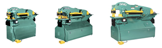
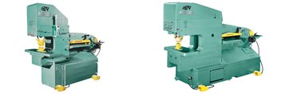
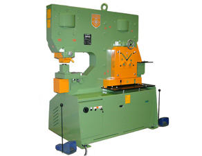
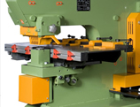
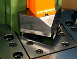
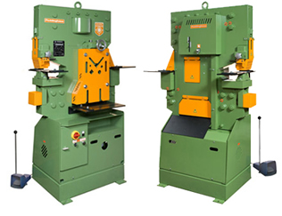
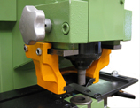
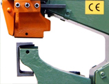
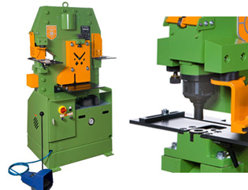

SEARCH FOR
PRODUCTS:
PIRANHA IRONWORKERS
Single Operator Ironworkers
Machinery Available: P-40, P-50, P-70, P-90, P-120
Piranha ironworkers give metal fabricators outstanding quality and innovative features. Every Piranha provides quality work, savings in set-up time, adaptability and versatility through a wide range of tooling, and factory engineering and support.

Piranha Single Operator Ironworkers provide:
- Industry leading cycle times - punch holes in less time than other ironworkers
- Urethane Strippers - Results in less part distortion, faster cycle times, no need for stripper height adjustment
- Integrated notching station - Low shear removes fillet for precise, burr-free cuts and clean notches.
- Quick-Change Tooling - Split dovetail slide mountings - make tool changes from punching to bending in less than one minute
- Automatic Urethane Hold-Downs - This unique Piranha feature, coupled with a low rake angle, keeps parts from deforming or shifting during the shearing process. The hold-downs work automatically, eliminating the need for time-consuming adjustments between cuts.
- Ergonomics - Convenient work height and visibility for all stations. The single work height also provides added benefits when using roller feed tables.
Piranha Ironworkers All Share These Standard Features:
-
Complete punching attachment with stripper
- 10 Punch and Die Sets appropriate to machine tonnage (14 included on the P-50!)
- Set of Round Bar Knives - 2-way
- Two Chip Buckets
- Extra Oil Filter Element
- Coupling Wrench
- Integral lifting lug system for instant portability
Attachments Available for Single Operator Ironworkers: Pipe/Tube Notching Attachment, Channel Die Block, Bending Attachments, 28XX Punch Attachment, Press Brake Tooling Holders, Quickset Gauging Tables, Channel Shear, Bar Bender, Mechanical Backgauges, Electrical Backgauge, 1-1/2" Oversize Punch Attachment, Roller Feed Tables.
Dual Operator Ironworkers
Machinery Available: PII-88, PII-140
Piranha Single Operator Ironworkers are capable of performing most applications. However, when two simultaneous operations are required (e.g. punching and notching), a dual operator ironworker fits the bill.

All Dual Operator Ironworkers have:
-
Large, open punch station - allows unlimited range of optional equipment and special tooling
- Longer strokes/deeper throat depths
- Large platen - for options and special tooling applications
- Long bending capability - optional bending attachments up to 48"
- 10 punch and die sets appropriate to machine tonnage
- One chip bucket
- Automatic 3-position Urethane Hold-Down on Plate, Angle and Bar Shear Stations
- Dual Operator Controls - punch station and shear/coper station. Each station has both a foot pedal and joystick
- Front and Rear Three-Position Electric Joystick Controls
- Set of Plate Shear Knives (4-way)
- Set of Angle Shear Knives (8-way top/4-way bottom)
- Set of Coper Knives (2-way top/4-way bottom)
- Set of Three Coper Table Guides
Available Attachments: Pipe/Tube Notching Attachment, Channel Die Block, Bending Backgauge, Bending Attachments, 28XX Punch Attachment, Press Brake Tooling Holders, Quickset Gauging Tables, Channel Shear, Bar Bender, Mechanical Backgauge, Electrical Backgauge, Roller Feed Tables.
Contact us for more information:
Or give us a call at: 303-466-7341
Monday - Friday, 7:00 AM - 5:00 PM, MST


PEDDINGHAUS IRONWORKERS
PeddiMax No. 1
Continuing in the footsteps of the legendary 210 series of mechanical ironworkers, the Peddimax No.1 two-station hydraulic ironworkers are designed for continuous production with independent cylinders and a unique dual slide design. Hydraulic power of up to 140 tons (127 metric tons) ensures that you have power to spare, and the various tooling options available provide you with a quick, efficient way to produce parts for your next big job.

The PeddiMax No.1 brings the power of Peddinghaus Ironworkers to the shop floor of fabricators all over the globe. This durable machine provides 140 tons (127 metric) of power for punching and shearing. As a dual cylinder machine, make the most of your time by running two operations at once on the Peddimax No. 1.
 
Features:
- Unique slide design
- True 90° operation to all 5 workstations
- Standard tooling allows up to 1-1/2" (38mm) holes, or up to 5-1/2" (140mm) with oversized attachment
- Angle shearing capabilities up to 6x6x1/2"
- Flat shearing up to 20x3/4" (500x19mm)
PeddiWorker
Since 1903 Peddinghaus has set international standards of quality and longevity throughout the metalworking industry. This legacy of reliability continues to deliver products like the PeddiWorker series of ironworkers. With machines nearing 50 years of age and still in operation, you can be sure that a PeddiWorker will still be processing steel for years to come.

The PeddiWorker No.1 design means you get higher tonnages in a smaller foot print – saving valuable shop space. The PeddiWorker No. 1 provides 100 tons (90 metric) of power and occupies a space smaller than competitive 50 ton (45 metric) ton machines.

Features:
- Unique slide design
- True 90° operation to all 5 workstations
- Standard tooling allows up to 1-1/4" (32mm) holes, or larger with oversized attachment
- Angle shearing capabilities up to 5x5x3/8" (125x9mm)
- Flat shearing up to 16x3/4" (400x19mm)
PeddiCat
The economical Peddicat No.1 Ironworker packs versatility and robust engineering into a small package for delivery of quality parts to shops of all sizes. The Peddicat No. 1 comes standard with a material length stop automatic shearing system, and also allows for the potential addition of optional bending attachments included standard with the machine.

The new Peddicat No. 1 is perfect for any application that requires punching, shearing, and notching of multiple shapes and sizes. This versatile Ironworker boasts 55 tons (50 Metric) of power for a wide array of applications.
Features:
- Unique slide design
- True 90° operation to all 5 workstations
- Standard tooling allows up to 1-1/4" (32mm) holes, or larger with oversized attachment
- Angle shearing capabilities up to 4x4x1/4"
- Flat shearing up to 14x1/2" (350x13mm)